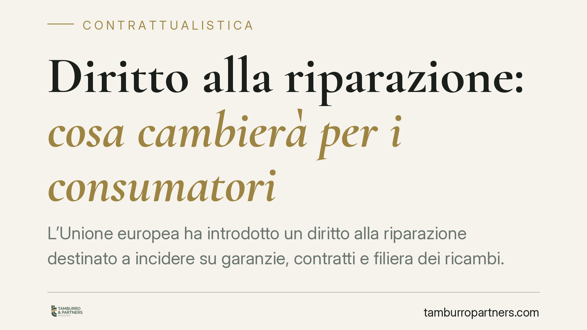

Diritto alla riparazione: cosa cambierà per i consumatori
L'Unione europea ha introdotto un diritto alla riparazione destinato a incidere su garanzie, contratti e filiera dei ricambi. La Direttiva (UE) 2024/1799 va recepita entro il 31 luglio 2026 e si applicherà dal 31 luglio 2027. Il quadro attuativo italiano è ancora in definizione: vediamo cosa è già certo e cosa resta da confermare.

Il quadro normativo
La cornice di riferimento è la Direttiva (UE) 2024/1799, nota come direttiva sul diritto alla riparazione. Il provvedimento mira a favorire la riparazione dei beni di consumo come alternativa alla sostituzione, riducendo rifiuti e sprechi.
La direttiva fissa due scadenze da tenere a mente. Gli Stati membri devono recepirla nel diritto interno entro il 31 luglio 2026; le norme nazionali di attuazione si applicheranno a partire dal 31 luglio 2027. Si tratta di date stabilite dalla direttiva stessa: il decreto italiano di recepimento, al momento, non risulta ancora emanato e le sue coordinate esatte (numero, articoli inseriti nel Codice del consumo, eventuale entrata in vigore anticipata) andranno verificate quando il testo sarà pubblicato.
Alcuni contenuti della direttiva sono già definiti. Per determinate categorie di beni — individuate dalla normativa europea in materia di progettazione ecocompatibile, come alcuni elettrodomestici e dispositivi elettronici — il produttore sarà tenuto a riparare il prodotto su richiesta del consumatore, anche dopo la scadenza della garanzia legale, dietro un prezzo o un corrispettivo ragionevole. La direttiva prevede inoltre, quando il consumatore sceglie la riparazione in luogo della sostituzione nell'ambito della garanzia legale, un'estensione di dodici mesi del periodo di garanzia sul bene riparato.
Implicazioni pratiche
Per i produttori cambia la logica del ciclo di vita del prodotto. L'obbligo di riparazione fuori garanzia impone di strutturare un servizio accessibile, di stimare tempi e costi ragionevoli e di gestire la domanda di riparazione come una funzione stabile, non occasionale.
Per i venditori rileva soprattutto la gerarchia dei rimedi nella garanzia legale. L'estensione di dodici mesi collegata alla scelta della riparazione incide sui modelli contrattuali, sulle condizioni generali di vendita e sulla gestione dei resi. Vanno riviste le clausole che oggi disciplinano i rapporti con i consumatori.
Per i consumatori l'effetto atteso è una maggiore facoltà di scelta: poter chiedere la riparazione, anche a prodotto non più in garanzia, e beneficiare di una garanzia prolungata quando si opta per la riparazione. Resta fermo che l'applicabilità concreta dipenderà dalle categorie di beni incluse e dai tempi di recepimento interno.
Per i riparatori indipendenti il punto qualificante è l'accesso non discriminatorio a ricambi, strumenti e documentazione tecnica. La direttiva tende a impedire che i produttori ostacolino la riparazione da parte di operatori terzi: un'apertura che può modificare gli equilibri della filiera del post-vendita.
Un quadro ancora in evoluzione
È importante distinguere ciò che è già stabilito a livello europeo da ciò che dipenderà dal decreto nazionale. Le date di recepimento (31 luglio 2026) e di applicazione (31 luglio 2027) derivano dalla direttiva. Le modalità attuative italiane — comprese le norme del Codice del consumo che verranno modificate o introdotte — saranno definite solo con la pubblicazione del provvedimento di recepimento. Fino ad allora, consigliamo prudenza nel considerare acquisiti dettagli numerici o procedurali non ancora confermati da fonte ufficiale.
Cosa fare in concreto
- Produttori: mappate le categorie di prodotto potenzialmente soggette all'obbligo di riparazione e iniziate a stimare costi, tempi e organizzazione del servizio di assistenza.
- Venditori: avviate una revisione delle condizioni generali di vendita e delle clausole su garanzia, rimedi e resi, in vista dell'estensione di dodici mesi.
- Consumatori: conservate documentazione d'acquisto e corrispondenza con il venditore; verificate caso per caso se il bene rientra tra quelli interessati.
- Riparatori indipendenti: monitorate le previsioni sull'accesso a ricambi e documentazione tecnica, che potranno ampliare le possibilità operative.
- Tutti: seguite la pubblicazione del decreto di recepimento per conoscere le regole definitive prima della data di applicazione.
Contributo informativo a cura di Tamburro & Partners - Avv. Giuseppe Tamburro. Non costituisce parere legale.
Ogni contratto ha il suo equilibrio.
Se vuoi una revisione delle clausole o una redazione su misura, scrivi allo studio. Ti rispondiamo entro un giorno lavorativo.